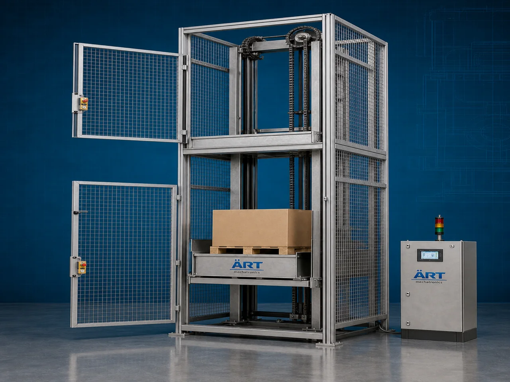

Goods Lift Machine (Industrial Material Elevator & Vertical Lifting System)
A Goods Lift Machine, also known as a Goods Elevator, Industrial Material Lift, or Cargo Lift System, is a heavy-duty industrial lifting equipment designed for safe vertical transportation of goods, pallets, machinery, cartons, raw materials, finished products, and bulk materials between different…

About the Goods Lift
Goods lift systems are widely used for: ✔ Industrial material lifting ✔ Multi-floor goods transportation ✔ Warehouse loading operations ✔ Factory material handling ✔ Production line support ✔ Heavy load vertical transfer
The machine improves: ✔ Material handling efficiency ✔ Workplace safety ✔ Production workflow management ✔ Labor reduction ✔ Vertical transportation speed ✔ Industrial productivity
Industrial goods lifts are manufactured using: ✔ Hydraulic lifting systems ✔ Electro mechanical lifting systems ✔ Heavy-duty platform structures ✔ Industrial safety mechanisms
to ensure reliable and safe lifting under industrial operating conditions.
Goods lift machines are widely used in industries such as:
Manufacturing industries
Warehousing & logistics industries
Food processing industries
Pharmaceutical industries
Packaging industries
Automobile industries
Chemical industries
Commercial industrial buildings
where safe and efficient vertical movement of industrial goods is essential.
The machine is highly suitable for: ✔ Pallet lifting ✔ Carton transportation ✔ Raw material movement ✔ Warehouse handling ✔ Machine transfer ✔ Multi-floor production systems
ART Mechatronics offers high-performance goods lift machines, engineered for heavy-duty industrial operation, safe material transportation, smooth lifting movement, and reliable long-term performance.
Working Principle of Goods Lift Machine
Goods, pallets, cartons, machinery, or materials are placed on lift platform or cage
Hydraulic or electro mechanical lifting system activates vertical movement mechanism
Platform moves safely upward or downward between different floors.
Machine lifts: ✔ Pallets ✔ Boxes ✔ Cartons ✔ Industrial equipment ✔ Raw materials ✔ Finished products efficiently and safely.
Heavy-duty lift structure ensures: Stable movement Smooth lifting Safe load carrying Controlled operation
Integrated safety systems include: Emergency stop system Overload protection Safety interlock doors Limit switches
Goods lift integrates with: Warehouses Conveyors Production lines Packaging systems Automation systems
Types of Goods Lift Machines
- 1. Hydraulic Goods Lift
Designed for: ✔ Heavy-duty industrial lifting applications
- 2. Electro Mechanical Goods Lift
Suitable for: ✔ Precision and energy-efficient lifting systems
- 3. Cage Type Goods Lift
Uses: ✔ Enclosed platform safety structure for secure material transportation.
- 4. Wall Mounted Goods Lift
Designed for: ✔ Compact industrial lifting applications
- 5. Warehouse Goods Lift
Suitable for: ✔ Multi-floor warehouse operations
- 6. Heavy Duty Industrial Goods Lift
Designed for: ✔ Large industrial load transportation systems
Industries Using Goods Lift Machines
🏭 Manufacturing Industry Multi-floor production material transfer systems 🚚 Warehousing & Logistics Industry Warehouse goods transportation systems 🍃 Food Processing Industry Food ingredient and product lifting systems 💊 Pharmaceutical Industry Controlled material transportation systems 📦 Packaging Industry Carton and packaging material handling systems 🚗 Automobile Industry Component and machinery lifting systems ⚗️ Chemical Industry Chemical drum and raw material handling systems 🏢 Commercial Industrial Buildings Industrial cargo transportation systems
Features & Advantages
✔ Safe and efficient vertical material transportation ✔ Heavy-duty industrial lifting capacity ✔ Smooth and stable lifting movement ✔ Improves workplace safety and productivity ✔ Reduces manual handling and labor costs ✔ Multi-floor industrial material transfer capability ✔ Low maintenance and reliable operation ✔ Heavy-duty industrial construction ✔ Easy integration with industrial automation systems
Technical Highlights
Lift Type: Hydraulic goods lift Electro mechanical goods lift Cage type goods lift Construction: Heavy-duty mild steel structure Drive System: Hydraulic power pack Electric motor drive Safety Features: Overload protection Emergency stop system Door interlock system Safety limit switches Automation: Manual control Semi-automatic Fully automatic PLC-based systems
Turnkey Goods Lift Solutions
ART Mechatronics offers: Complete industrial goods lift systems Warehouse lifting and handling solutions Conveyor and production line integration systems Customized cargo lifting platforms Installation & commissioning After-sales service & AMC
Why Choose Art Mechatronics
Expertise in industrial lifting and material handling systems Customized goods lift solutions for multiple industries High-performance heavy-duty lifting technology Durable and reliable industrial construction Proven industrial performance across sectors
Applications
Manufacturing Plants Warehouses & Logistics Centers Food Processing Industries Pharmaceutical Manufacturing Units Packaging Facilities Automobile Industries
Related Conveying & Handling machines
Get pricing & specs for the Goods Lift
Share the product, target capacity, current process and plant location. These details help our engineers discuss the right machine or line configuration.
One partner, from design to start-up
ART Mechatronics designs, manufactures, installs and commissions your Goods Lift solution with regional presence in India, UAE and Thailand.